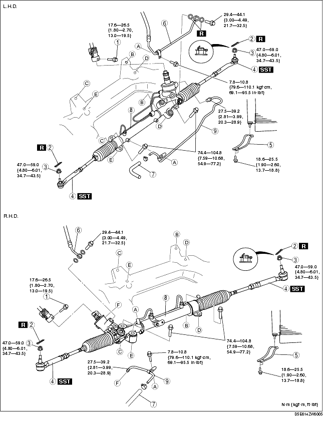
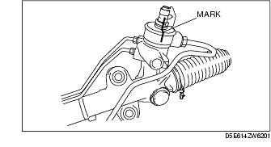
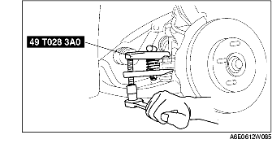
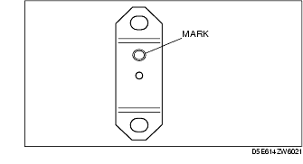
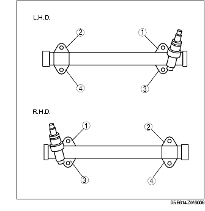

Workshop Manual ➭ STEERING ➭ POWER STEERING ➭ STEERING GEAR AND LINKAGE REMOVAL/INSTALLATION
STEERING GEAR AND LINKAGE REMOVAL/INSTALLATION
id061400800900
{: #wp1059778}
Caution
• Performing the following procedures without first removing the ABS wheel-speed sensor may possibly cause an open circuit in the harness if it is pulled by mistake. Before performing the following procedures, remove the ABS wheel-speed sensor (axle side) and fix it to an appropriate place where the sensor will not be pulled by mistake while servicing the vehicle.
-
Remove the ABS wheel-speed sensor. (See FRONT ABS WHEEL-SPEED SENSOR REMOVAL/INSTALLATION.)
-
Remove the front stabilizer. (See FRONT STABILIZER REMOVAL/INSTALLATION.)
-
Remove in the order indicated in the table.
-
Install in the reverse order of removal.
-
After installation, adjust front wheel alignment. (See FRONT WHEEL ALIGNMENT.)

|
Bolt (intermediate shaft) {: #wp1059906} (See Bolt (Intermediate Shaft) Removal Note.) {: #wp1059970} (See Bolt (Intermediate Shaft) Installation Note.) {: #wp1059984} |
|
|---|---|
|
2 {: #wp1059944} |
Cotter pin {: #wp1059947} |
|
3 {: #wp1059951} |
Nuts (tie-rod end ball joint) {: #wp1059954} |
|
4 {: #wp1060018} |
Tie-rod end ball joint {: #wp1060021} (See Tie-rod End Ball Joint Removal Note.) {: #wp1060043} |
|
5 {: #wp1060055} |
Lower mounting rubber bracket {: #wp1060058} |
|
6 {: #wp1060078} |
Pressure pipe {: #wp1060081} |
|
7 {: #wp1060101} |
Return hose {: #wp1060104} |
|
8 {: #wp1060124} |
Steering gear and linkage {: #wp1060127} (See Steering Gear and Linkage Removal Note .) {: #wp1060149} (See Steering Gear and Linkage Installation Note.) {: #wp1060164} |
|
9 {: #wp1060176} |
Return pipe {: #wp1060179} |
Bolt (Intermediate Shaft) Removal Note
- Mark the pinion shaft and gear housing for proper installation.{: #wp1060235}

Tie-rod End Ball Joint Removal Note
-
Remove the tie-rod nut.
-
Separate the tie-rod end from the steering knuckle using the SSTs.{: #wp1060285}

Steering Gear and Linkage Removal Note
- Remove the steering gear and linkage by pulling it from the right side.
Steering Gear and Linkage Installation Note
-
Tighten bolts loosely.
-
Assemble the mounting bracket with the mark on the bracket facing the vehicle rear.{: #wp1060363}

- Tighten the mounting bracket bolts to the specified torque in the order shown.{: #wp1060390}

Tightening torque74.4-104.8 N·m {7.587-10.68 kgf·m, 54.88-77.29 ft·lbf}
Bolt (Intermediate Shaft) Installation Note
- Align the marks and install the intermediate shaft and bolt.